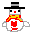
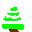

С НОВЫМ 1999 ГОДОМ!!!
НАВИГАЦИЯ
ГЛАВНАЯ
ЧАТ 98
MP3 АРХИВ
ВИКИ / ПРАВА
Наш Снеговик:
Свежие новости:
|
Добро пожаловать! Я наконец-то загрузил все картинки на хостинг. Скоро добавлю фоновую музыку! На улице сугробы, а у нас в интернете всегда уютно и лампово. |
 |

Сайт оптимизирован для разрешения 800x600 точек


Вы посетитель номер: 0001998
Copyright © 1995-2026 Amirxan Olegov. Music by N. Yablonskaya